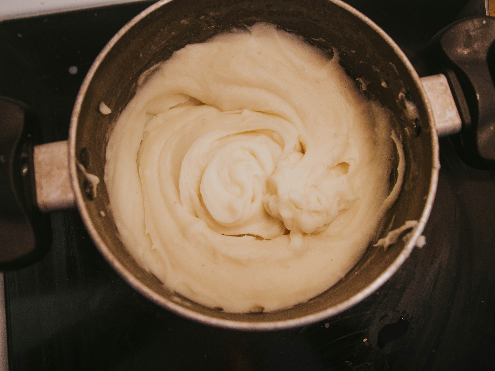

| The College Cookbook | |
|---|
| Chips and Guacamole | |
| Chips and guacamole are an appetizer known for being cheap and easy to make.
While the chips themselves might not be a game changer, when paired with a freshly made guacamole,
filled with cilantro, lime, jalapeno, and avocados, it can become an out of this world pairing.
Link to recipe |
 |
| Mixed Greens Salad | |
| Piggybacking off of our Chips and Guacamole, we have another staple of simplicity.
Salads are a godsend in the culinary world. They can be made from most anything, and add a nice bit of color
to one's day! The salad we've provided uses a lot of the same ingredients as our Chips and Guacamole, so if you
have extras, be sure to give this one a try. And don't forget to bring cheese and salad dressing if you prefer,
salad doesn't necessarily need to be just greens.
Link to recipe |
| Mashed Potatoes | |
| You can never go wrong with a creamy and buttery pot of mashed potatoes. Serve with pork, beef, chicken, turkey,
and more! It's truly a versatile dish and an American classic. If you feel like spicing up this dish, add on whatever toppings you desire.
That could be chives, cheese, bacon bits, black peppercorn, or more! The beauty of a simple recipe is the ability to customize.
Link to recipe |
 |
| BBQ Chicken | |
| Although chicken can seem like a daunting task for a novice cook, look no further for a guide!
If you've ever wanted a nice smokey flavor right at home, look no further. Our chicken recipe is guaranteed to fill
your need for spice, bringing together barbecue flavors with tajin and garlic powder for a complex, yet simple to create
flavor pallet.
Link to recipe |
 |
| Chocolate Chip Cookies | |
| How could we not give a recipe for a classic like this? Chocolate Chip Cookies are always a good option for a dessert,
a snack, maybe even just dinner! Combining a soft base with delicious chocolate chips of your liking can give most other cookies a run for their
money. Perhaps you enjoy to cut through the buttery goodness of these cookies with dark chocolate, or blissfully float away in milk chocolate dreams.
No matter what, it's highly recommended you try this delicious recipe!
Link to recipe |
 |